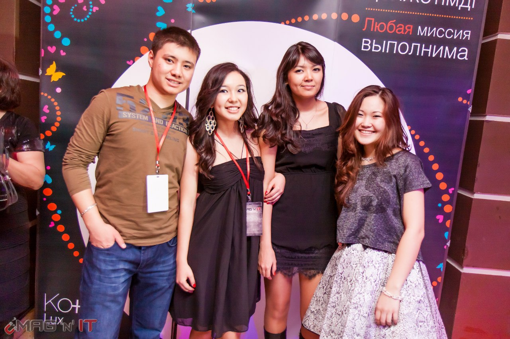

Миссия кафедры - подготовка высококвалифицированных специалистов в области информационных систем, математического моделирования и информатики. Обеспечение учебного процесса системными знаниями, позволяющими приобрести навыки создания Информационных Систем, охватывающих информационные процессы целого предприятия, достигая их полной согласованности, безызбыточности и прозрачности. Изучение современных методов анализа данных, математического и компьютерного моделирования сложных систем, а также программной реализации этих методов. Достижение постепенной интеграции образования, науки и производства.
Также задачей кафедры является выполнение научно-исследовательской деятельности, расширение и углубление международного и внутриреспубликанского сотрудничества, обеспечение профессионального роста сотрудников, обеспечение научно-практической деятельности студентов.
Международные связи:
Кафедра постоянно работает над укреплением и расширением международных контактов совместно и под руководством администрации Университета. В настоящее время контакты поддерживаются со следующими учебными и научными учреждениями:
Подразделение Carnegie Mellon University – iCarnegie (USA)
University Tenaga National, Malaysia
University Kuala Lumpur, Malaysia
Central European University, Budapest, Hungary
Миссия кафедры - обеспечить учебный процесс системными знаниями в области:
естественных наук и инфокоммуникационных технологий, включая физику, программирование, защиту данных и информационных систем, администрирование, веб программирование и веб администрирование, операционные системы, мультимедийные системы, роботехнику;
радиоэлектронных систем – радиопередающие и радиоприемные устройства, беспроводные системы, телекоммуникации, спутниковые системы связи, телевидение и радиовещание;
Интеграционная связь фундаментальных наук, компьютерных технологий и прикладных информационных систем определяет стратегическое направление развития кафедры, ее научных направлений, реализацию творческих интересов сотрудников в сферах теоретических и прикладных исследований.
Миссией кафедры следует также считать пропаганду знаний в области естественных наук и инфокоммуникационных технологий в среде творческой молодежи, студентов и профессионалов, которые интересуются актуальными проблемами науки, технологий и обработки информации.
Кафедра языков IT Университета была сформирована в сентябре 2010 года в целях качественного повышения уровня подготовки студентов, обучающихся по IT специальностям. Она призвана обеспечивать выполнение образовательных и организационно-методических задач университета, компонентом которых является иностранный язык.
Миссия кафедры – качественная языковая подготовка будущих IT-специалистов, готовых успешно интегрироваться в национальное и международное профессиональное сообщество с целью продвижения отечественной науки и экономики.
Основной целью кафедры является формирование условий и организация учебного процесса, который способствует активному овладению студентами тремя языками (казахский, английский, русский) для устного и письменного общения в процессе общественной и профессиональной деятельности.
Кафедра обеспечивает обучение студентов программ бакалавриата и магистратуры IT Университета по таким дисциплинам, как "Казахский язык", "Профессиональный казахский язык", "Русский язык", "Профессиональный русский язык" "Деловой русский язык", "Английский язык", "Профессиональный английский язык", "Деловой английский язык".
В своей деятельности преподаватели кафедры придерживаются основополагающих принципов коммуникативности, интерактивности обучения, ориентированности на обучаемого, претворения в жизнь политики триединства языков Казахстана. В воспитательной работе кафедра нацелена на развитие лидерских качеств, критического и творческого мышления, умения работать в команде, разрешать проблемы.
Кафедра медиакоммуникаций и истории Казахстана является единственной кафедрой в Казахстане, сосредоточенной на подготовке журналистов и специалистов медиаиндустрии в электронных СМИ, с использованием мультимедийных технологий, новейших информационных технологий, умеющих работать в условиях конвергентной платформы. Модель выпускника специальности "Журналистика".
Акцент при подготовке специалистов медиаиндустрии делается на практическую составляющую, на междисциплинарное образование, комбинирование различных областей исследований - радиовещания, телевидения, цифрового контента, рекламы и связей с общественностью. В связи с глобализацией мирового информационного пространства и конвергенцией СМИ, формат производства контента становится разнообразным и сложным.
Учитывая мировые тенденции стремительного развития медиаиндустрии, кафедра уделяет внимание не только редакторской и журналистской подготовке специалистов, но в компетенции выпускника IT Университета специальности «электронная журналистика» входит также владение компьютерными программами дизайна СМИ, видеомонтажа, аудиомонтажа, режиссерского и операторского мастерства.
Сочетание теоретического и практического обучения в целом дает модель компетентного подхода в обучении. Наши студенты универсальны, смогут работать в различных средствах массовой информации.
Наша цель - предоставление знаний через преподавание, научные исследования, творчество и услуги. Кафедра обеспечит качество научной / творческой деятельности студента.
Студенты специальности "журналистика" выпускают собственные телепередачи, журнал "Mag' n ' IT", ведут сайт, паблик. Все новости о факультете и университете можно посмотреть на сайте e-journalism.iitu.kz, "Mag' n ' IT"
Миссия кафедры экономики и бизнеса: формирование профессиональных компетенций и личностных качеств конкурентоспособных, творчески и инновационно мыслящих, умеющих реализовать свои знания и навыки специалистов в области IT менеджмента и IT финансов на отечественном и международном рынке труда на основе:
- постоянной модернизации образовательного процесса;
- внедрения прогрессивных технологий и методик;
- активного ведения научных изысканий в области экономики и менеджмента;
- стимулирование интереса к творческой и научно-исследовательской работе.
Цели в области качества кафедры экономики и бизнеса:
1.Стремиться к максимальному удовлетворению потребностей бизнеса, правительственных организаций и общества в качественных образовательных услугах.
2.Гарантировать стабильное качество подготовки студентов по выпускающим специальностям ИТ Менеджмент и ИТ Финансы.
3.Улучшать результативность учебного процесса через повышение успеваемости и посещаемости студентов.
4.Оптимизировать информационно-методическое обеспечение образовательного процесса.
5.Обеспечивать эффективность организации внеучебной работы со студентами.